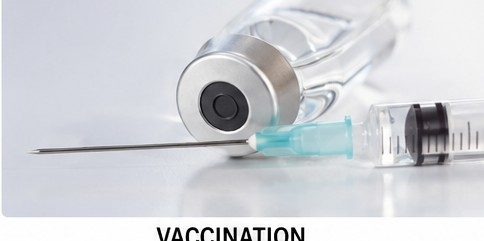

Situation — Samir s’inquiète
Samir a eu un rapport sexuel non protégé. Quelques semaines plus tard, il se sent très fatigué et remarque des symptômes inhabituels. Il hésite à en parler par gêne.
Cours standard adapté : mêmes objectifs que le programme CAP, textes courts, questions guidées, indices, corrigés, explications concrètes et audio sur les blocs.
Lire dans l’ordre. Chaque document est suivi de ses questions. Les images aident à comprendre, mais le texte suffit pour répondre.
Utiliser les aides. Ouvrir l’indice pour démarrer, le corrigé pour vérifier, puis l’explication pour comprendre avec un exemple concret.
Traiter l’information : repérer une information utile dans un document.
Analyser une situation : comprendre le problème, les personnes concernées et les causes possibles.
Mettre en relation : faire le lien entre une information du document et une connaissance du cours.
Samir a eu un rapport sexuel non protégé. Quelques semaines plus tard, il se sent très fatigué et remarque des symptômes inhabituels. Il hésite à en parler par gêne.
1. À partir du document 1,
1.1C2Identifier le risque principal dans la situation.
Repérer le rapport non protégé et les symptômes inhabituels.
Il existe un risque possible d’IST.
Exemple : un rapport sans préservatif peut transmettre une IST même si les symptômes apparaissent plus tard ou restent discrets.
1.2C4Proposer une première action adaptée.
Choisir une action de santé rapide et confidentielle.
Samir doit demander conseil à un professionnel de santé ou se faire dépister.
Exemple : aller dans un CeGIDD permet d’être informé et dépisté de façon gratuite et confidentielle.
Une infection sexuellement transmissible est une infection qui peut se transmettre lors de relations sexuelles. Certaines IST sont dues à des bactéries, d’autres à des virus.
Chlamydiose, syphilis, blennorragie.
VIH, hépatite B, herpès génital, papillomavirus.
Brûlures, écoulements, boutons, fièvre, fatigue. Parfois aucun symptôme.
2. À partir du document 2,
2.1C1Classer quatre IST selon l’origine.
| Bactérienne | Virale |
|---|---|
Utiliser les deux listes du document.
Bactériennes : chlamydiose, syphilis. Virales : VIH, hépatite B.
Exemple : une IST bactérienne peut être traitée par antibiotiques ; une IST virale peut nécessiter un autre suivi médical.
2.2C1Relever deux symptômes possibles d’une IST.
Chercher les signes visibles ou ressentis par la personne.
Brûlures, écoulements, boutons, fièvre, fatigue.
Exemple : une personne peut avoir une IST sans symptôme ; c’est pour cela que le dépistage est important après une prise de risque.
Traiter l’information : repérer une information utile dans un document.
Mettre en relation : faire le lien entre une information du document et une connaissance du cours.
Proposer une solution : choisir une action adaptée à une situation.
Rapport sexuel non protégé.
Contact avec du sang contaminé, par exemple une seringue.
Transmission pendant la grossesse, l’accouchement ou l’allaitement selon les IST.
1. À partir du document 3,
1.1C3Associer chaque situation à une voie de transmission.
| Situation | Voie |
|---|---|
| Rapport non protégé | |
| Piqûre avec une seringue contaminée | |
| Transmission pendant la grossesse |
Repérer si la situation concerne un rapport, du sang ou une grossesse.
Rapport non protégé : sexuelle. Seringue : sanguine. Grossesse : mère-enfant.
Exemple : se serrer la main ne transmet pas le VIH ; le risque concerne surtout certains liquides biologiques et situations précises.
1.2C1Cocher les situations qui présentent un risque d’IST.
Repérer les situations où il peut y avoir contact sexuel non protégé ou sang contaminé.
Rapport sexuel non protégé et partage d’une seringue.
Exemple : le préservatif correctement utilisé diminue le risque ; le partage d’une seringue est dangereux car il peut transmettre du sang contaminé.
Le préservatif limite la transmission de nombreuses IST lors des rapports sexuels. La vaccination protège contre certaines IST, comme l’hépatite B ou les papillomavirus. Le dépistage permet de savoir si une personne est infectée, même sans symptôme.
2. À partir du document 4,
2.1C1Relever trois moyens de prévention.
Chercher les actions qui empêchent ou repèrent l’infection.
Préservatif, vaccination, dépistage.
Exemple : le préservatif protège pendant le rapport ; le dépistage permet de savoir après une prise de risque s’il faut un traitement.
2.2C4Proposer une conduite responsable après un rapport non protégé.
Penser à la consultation et au dépistage.
Consulter rapidement un professionnel ou un CeGIDD ; faire un dépistage ; demander si un traitement est nécessaire.
Exemple : après une rupture de préservatif, il ne faut pas attendre les symptômes ; il faut demander conseil rapidement.
Traiter l’information : repérer une information utile dans un document.
Mettre en relation : faire le lien entre une information du document et une connaissance du cours.
Proposer une solution : choisir une action adaptée à une situation.
Communiquer : rédiger une réponse claire pour expliquer ou conseiller.

Après une prise de risque, il faut consulter rapidement un professionnel de santé, un service d’urgence ou un CeGIDD. Pour le VIH, un traitement post-exposition, appelé TPE, peut être proposé très rapidement après le risque.
Le TPE n’est pas automatique : un professionnel évalue la situation. Plus la consultation est rapide, plus la prise en charge est efficace.
1. À partir du document 5,
1.1C1Relever le nom du traitement possible après un risque VIH.
Chercher le sigle associé au traitement post-exposition.
Le TPE, traitement post-exposition.
Exemple : après un rapport à risque pour le VIH, une consultation rapide peut permettre d’évaluer si un TPE doit être commencé.
1.2C4Proposer les trois premiers réflexes après une prise de risque.
Mettre les actions dans un ordre réaliste.
Consulter rapidement ; expliquer la situation ; suivre les conseils de dépistage ou de traitement.
Exemple : appeler un CeGIDD ou les urgences permet d’avoir une réponse médicale sans rester seul avec l’inquiétude.
Le CeGIDD est un centre gratuit d’information, de dépistage et de diagnostic. Il peut informer sur les IST, proposer un dépistage, orienter vers un traitement, vacciner contre certaines IST et accompagner les personnes de façon confidentielle.
2. À partir du document 6,
2.1C1Relever trois missions du CeGIDD.
Chercher les verbes qui décrivent ce que fait le centre.
Informer, dépister, diagnostiquer, orienter, vacciner, accompagner.
Exemple : une personne mineure peut demander des informations et un dépistage dans un cadre confidentiel.
2.2C6Rédiger un conseil court à Samir.
Rappeler le risque, proposer une consultation et expliquer pourquoi.
Samir, tu as eu un rapport non protégé et des symptômes. Il faut demander conseil rapidement à un professionnel ou à un CeGIDD. Le dépistage permettra de savoir s’il y a une IST et d’être soigné si besoin.
Exemple : un conseil utile donne une action précise et rassure : il existe des lieux de soin confidentiels.